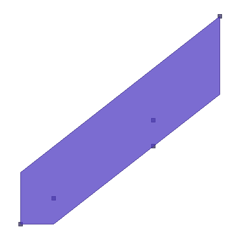

Process Tutorial¶
The GeoTools process system is a great way to package up useful functionality for use in your application (or publish out via a “web processing service” such as GeoServer or 52N).
When used with a Process Engine these individual processes can be chained together to make for interesting and useful scripts.
This process data structure is a lot more capable than the Functions we added to the geotools filter system and is able to work on large quantities of data as needed. The general idea is similar in that you get to write some simple java code and package it up for the GeoTools library to use.
We have a number of options:
- Annotations
- DataStructure
Reference:
Process Annotations¶
This is the fastest way to create a process; and is great (as long as your process produces a single result).
Add a dependency on gt-process to your project:
<dependency> <groupId>org.geotools</groupId> <artifactId>gt-process</artifactId> <version>${geotools.version}</version> </dependency>To start with we need to create a class that extends StaticMethodsProcessFactory:
package org.geotools.tutorial.process; import org.geotools.process.factory.DescribeParameter; import org.geotools.process.factory.DescribeProcess; import org.geotools.process.factory.DescribeResult; import org.geotools.process.factory.StaticMethodsProcessFactory; import org.geotools.text.Text; import com.vividsolutions.jts.geom.Geometry; import com.vividsolutions.jts.geom.OctagonalEnvelope; public class ProcessTutorial extends StaticMethodsProcessFactory<ProcessTutorial> {
We have a little bit of work to fill in the constructor
public ProcessTutorial() { super(Text.text("Tutorial"), "tutorial", ProcessTutorial.class); }
We can now implement our function:
static public Geometry octagonalEnvelope( Geometry geom) { return new OctagonalEnvelope(geom).toGeometry(geom.getFactory()); }And then we can fill in the annotations to desribe our process, result and parameters.
- @DescribeProcess
- @DescribeParameter
- @DescribeResult
@DescribeProcess(title = "Octagonal Envelope", description = "Get the octagonal envelope of this Geometry.") @DescribeResult(description="octagonal of geom") static public Geometry octagonalEnvelope(@DescribeParameter(name = "geom") Geometry geom) { return new OctagonalEnvelope(geom).toGeometry(geom.getFactory()); }
And then hook it up to Factory SPI (as was done for the Function tutorial).
Create the file:
- META_INF/services/org.geotools.process.ProcessFactory
Fill in the following contents (one implementation class per line):
org.geotools.tutorial.process.ProcessTutorial
That is it octagnalEnvelope is now published.
Things to Try¶
Try calling your process using the Processors utility class
WKTReader wktReader = new WKTReader(new GeometryFactory()); Geometry geom = wktReader.read("MULTIPOINT (1 1, 5 4, 7 9, 5 5, 2 2)"); Name name = new NameImpl("tutorial","octagonalEnvelope"); Process process = Processors.createProcess( name ); ProcessExecutor engine = Processors.newProcessExecutor(2); // quick map of inputs Map<String,Object> input = new KVP("geom", geom); Progress working = engine.submit(process, input ); // you could do other stuff whle working is doing its thing if( working.isCancelled() ){ return; } Map<String,Object> result = working.get(); // get is BLOCKING Geometry octo = (Geometry) result.get("result"); System.out.println( octo );
Here is what that looks like:
The Processors class can also list a Map<String,Parameter> allowing you to show a wizard for data entry (just like when connecting to a DataStore).
Name name = new NameImpl("tutorial","octagonalEnvelope"); Map<String, Parameter<?>> paramInfo = Processors.getParameterInfo(name);